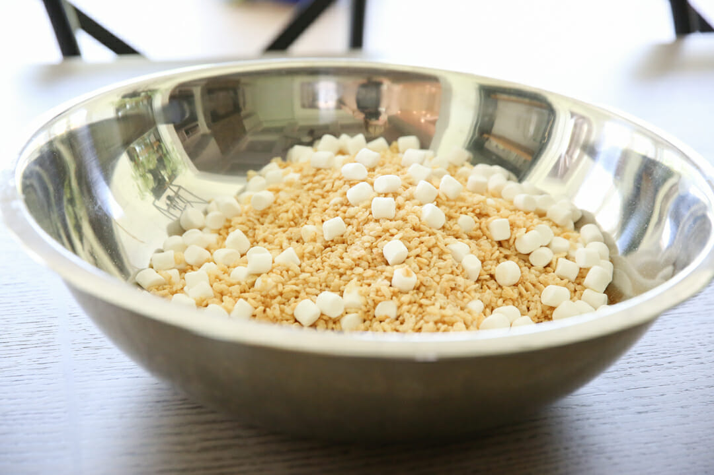
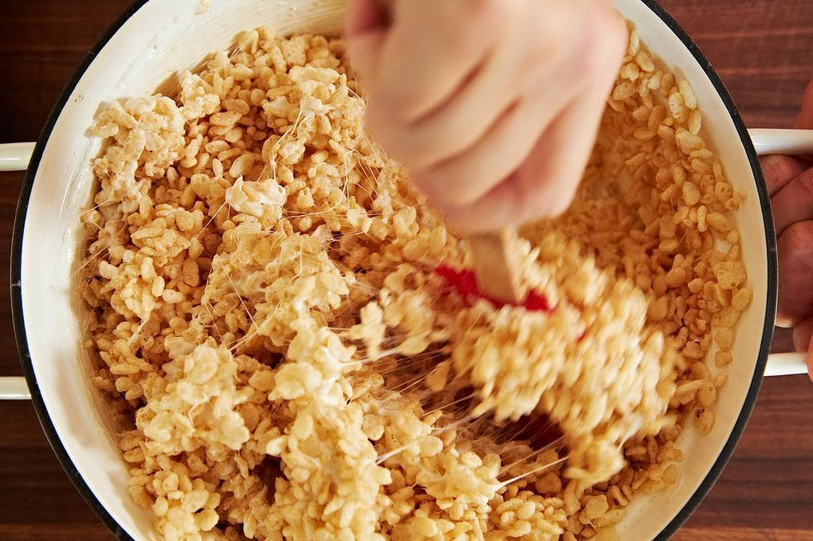
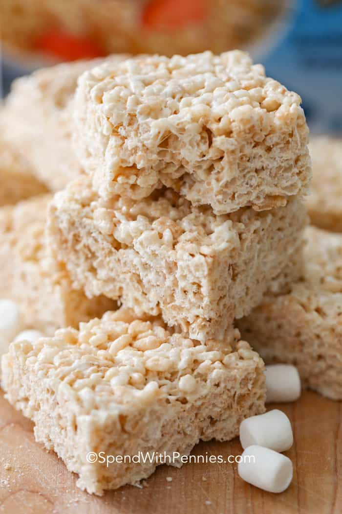

Gather raw ingredients into a large bowl for mixing
Melt butter in large sauce pan over low heat Add marshmallows and stir until melted and well-blended. Cook 2 minutes longer, stirring constantly. Remove from heat. Add cereal. Stir until well coated.
Using buttered spatula or waxed paper, press mixture evenly and firmly in buttered 13 x 9 inch pan. Cut into 2 x 2 inch squares when cool.
